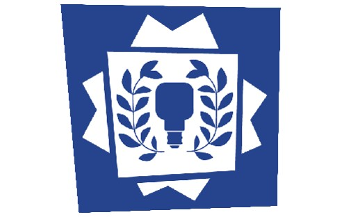
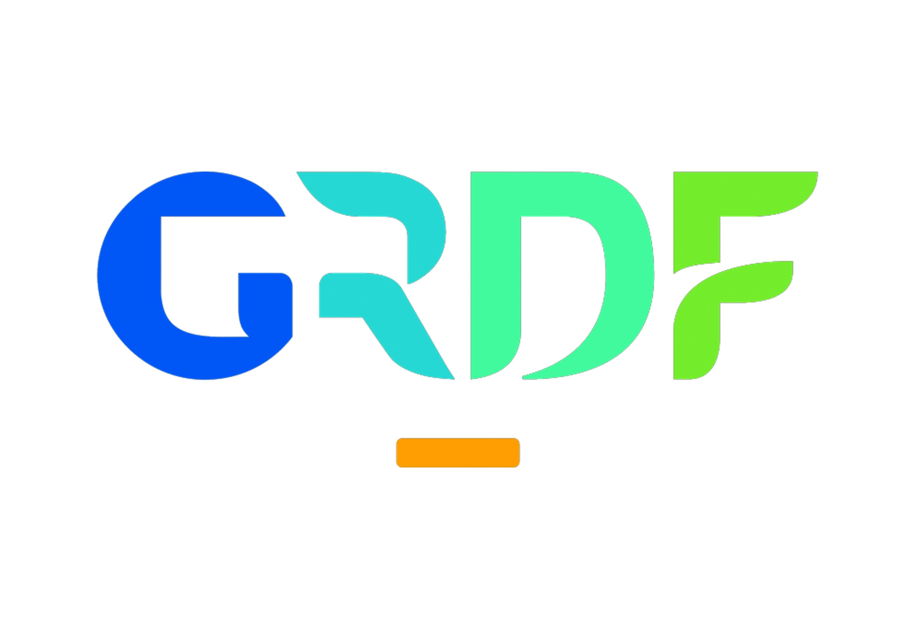

The Défi Chal'enge
A 15-day academic project bringing together students from Arts et Métiers, CNAM BFC (Computer Science degree) and EGC Centre-Est (Marketing bachelor). The goal is to combine diverse technical (VR, AI) and strategic expertise to design functional prototypes addressing real business needs.

GRDF
France's main natural gas distribution network operator. Its activities involve extensive work on public roads, requiring ongoing training programmes to ensure the safety of technicians during underground and trench operations.
Context & Goals
Background and field observations
Developed as part of the Défi Chal'enge (an intensive 15-day project), our team of 6 students (two Master 2, one Master 1, one L3, one L1 Computer Science and one Marketing bachelor) chose the challenge submitted by GRDF. Throughout the development, we worked closely with a Senior Business Manager from the company. GRDF places occupational risk prevention at the heart of its priorities. Currently, the company uses physical scale models to simulate accidents related to earthworks. However, these setups remain static and offer limited interactivity. Cave-in accidents still occur due to a limited perception of real hazards and insufficient training for sudden unexpected situations.

Our mission and learning objectives
To address this lack of engagement, we designed a Virtual Reality experience that simulates hazardous environments without putting operators at risk. The application specifically aims to:
- Raise awareness among technicians about the dangers of cave-ins in excavation sites.
- Recognise the warning signs indicating an imminent collapse.
- Experience the consequences of a poor decision in a safe environment.
- Strengthen retention through immersion and immediate feedback.
Priority risks targeted
- Burial risk: A collapse caused by material instability (trench depth, nearby truck vibrations, water runoff).
- Falling materials: A hazard linked to non-compliant shoring (bracing), such as planks that are too thin or poorly positioned props.
The Application
In practice, TerrariskVR simulates a residential street worksite currently undergoing excavation. Wearing a Meta Quest 3 headset, the learner plays the role of a technician free to move throughout the environment.
The application features two distinct Unity scenes: one set in a secured trench (properly shored and marked out), the other in an unsecured trench. In both scenes, an external event such as a passing truck triggers vibrations and causes a cave-in. By experiencing both scenarios, the user can directly observe the impact of safety measures on the outcome, making the real on-site risks tangible and memorable.


My Role & Contributions
Within the team, I held the following roles:
- Technical Lead & Integration: Programming interactive mechanics in C# with Unity and integrating the OpenXR SDK for headset deployment.
- 3D Pipeline & Physics: Contributing to the creation of 3D assets, building the physics-based destruction simulation in Blender, then baking the cave-in for integration into the game engine.
- Audiovisual Production: Writing, filming and editing the project presentation video.
- Project Management: Coordinating the team, tracking progress via Git and preparing the overall presentation stand.
Technical & Organisational Challenges
1. Physics simulation (Blender → Unity)
To simulate the burial without impacting the headset's performance, I offloaded the physics calculation to Blender. The destruction simulation of the earth blocks was pre-computed (baked), then exported as an animation into Unity. This approach delivers visually convincing destruction while keeping CPU usage low.
2. Meta Quest 3 optimisation (standalone)
The application had to run autonomously (without a tethered PC). I supervised the optimisation of 3D meshes (LOD), light baking (lightmapping) and the limitation of dynamic particles to ensure stable performance (72/90 FPS) — an essential criterion for comfort in VR.
3. Managing a multidisciplinary team
Beyond the technical development, I coordinated a team of 6 students with very different profiles (computer science and marketing, from first year to Master 2). Setting up a Git workflow and clearly distributing tasks allowed us to synchronise our work and deliver the prototype within a tight two-week deadline.
Results & Summary
At the end of the project, we delivered a fully functional standalone VR prototype.
- Industry validation: The Senior Business Manager at GRDF tested and validated the prototype during our final project presentation.
- Outlook: Following this validation, GRDF is considering continuing development of the solution by potentially hiring a dedicated engineer or intern.
"Force of Conviction" Award
The project received this award at the Défi Chal'enge, recognising the clarity of the video presentation, the accessibility of the educational message and the technical viability of the solution.